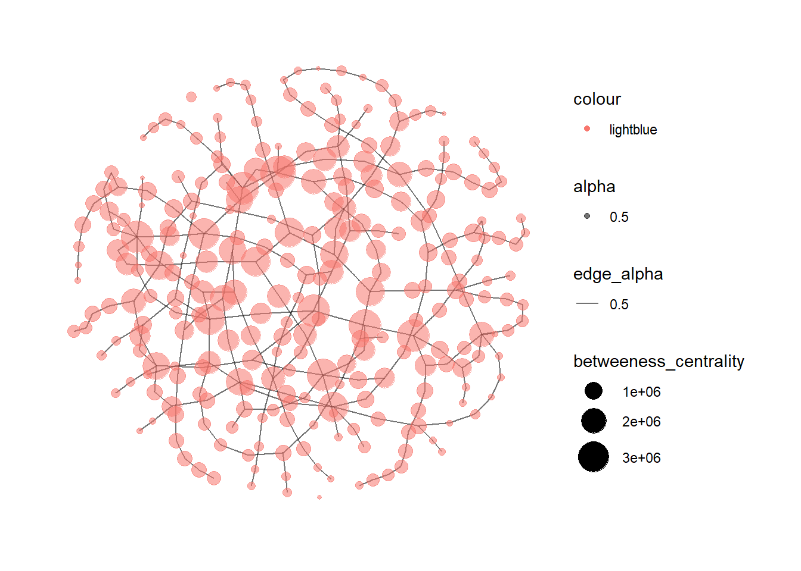

pacman::p_load(corporaexplorer, stringi, rvest, readtext, tidyverse)In-Class Exercise 6 -
Getting Started
Installing and loading the required libraries
The following R packages will be used:
corporaexplorer
stringi
rvest
readtext
tidyverse
Code chunk below will be used to check if these packages have been installed and also will load them into the working R environment.
The Data
Downloading the King James Bible from Project Gutenberg:
Importing data
bible <- readr::read_lines("http://www.gutenberg.org/cache/epub/10/pg10.txt")Collapse into a string
bible <- paste(bible, collapse = "\n")Identify the beginning and end of the Bible
Technique borrowed from https://quanteda.io/articles/pkgdown/replication/digital-humanities.html
start_v <- stri_locate_first_fixed(bible, "The First Book of Moses: Called Genesis")[1]
end_v <- stri_locate_last_fixed(bible, "Amen.")[2]
bible <- stri_sub(bible, start_v, end_v)Split string into books
Every book in the bible is preceded by five newlines, which can be used to split the string into a vector where each element is a book.
books <- stri_split_regex(bible, "\n{5}") %>%
unlist %>%
.[-40]
# Removing the heading "The New Testament of the King James Bible"Replacing newlines and space
books <- str_replace_all(books, "\n{2,}", "NEW_PARAGRAPH") %>%
str_replace_all("\n", " ") %>%
str_replace_all("NEW_PARAGRAPH", "\n\n")
books <- books[3:68] # The two first elements are not booksIdentifying chapters within books
chapters <- str_replace_all(books, "(\\d+:1 )", "NEW_CHAPTER\\1") %>%
stri_split_regex("NEW_CHAPTER")Remove chapter headings
chapters <- lapply(chapters, function(x) x[-1])Retrieve shorter book titles
Retrieve shorter book titles from esv.org to save space in the corpus map plot.
book_titles <- read_html("https://www.esv.org/resources/esv-global-study-bible/list-of-abbreviations") %>%
html_nodes("td:nth-child(1)") %>%
html_text() %>%
.[13:78] # Removing irrelevant elements after manual inspection.Identify belonging of book
Indicate whether a book belongs to the Old or New Testament.
testament <- c(rep("Old", 39), rep("New", 27))# Data frame with one book as one row.
bible_df <- tibble::tibble(Text = chapters,
Book = book_titles,
Testament = testament)
# Each chapter to be one row, but keep the metadata (which book and which testament).
bible_df <- tidyr::unnest(bible_df, Text)Organise Data
Corpus not organised by date, so date_based_corpus to FALSE.
KJB <- prepare_data(dataset = bible_df,
date_based_corpus = FALSE,
grouping_variable = "Book",
columns_doc_info = c("Testament", "Book"))Explore Corpus
explore(KJB)Shiny applications not supported in static R Markdown documents
Getting Started
Installing and loading the required libraries
The following R packages will be used:
ggforce
tidygraph
ggraph
visNetwork
skimr
tidytext
tidyverse
graphlayouts
jsonlite
Code chunk below will be used to check if these packages have been installed and also will load them into the working R environment.
pacman::p_load(ggforce, tidygraph, ggraph,
visNetwork, skimr, tidytext,
tidyverse, graphlayouts, jsonlite)Importing JSON File
mc3_data <- fromJSON("data/MC3.json")Verify data type
class(mc3_data)[1] "list"Extract edges
mc3_edges <-
as_tibble(mc3_data$links) %>%
distinct() %>%
mutate(source =
as.character(source),
target =
as.character(target),
type = as.character(type)) %>%
group_by(source,target,type) %>% #to count number of unique links
summarise(weights = n()) %>%
filter(source!=target) %>%
ungroup()Extract nodes
mc3_nodes <-
as_tibble(mc3_data$nodes) %>%
mutate(country = as.character(country),
id = as.character(id),
product_services = as.character(product_services),
revenue_omu = as.numeric(as.character(revenue_omu)),
type = as.character(type)) %>%
select(id, country, type, revenue_omu, product_services)Modifying network nodes and edges
id1 <- mc3_edges %>%
select(source) %>%
rename(id = source)
id2 <- mc3_edges %>%
select(target) %>%
rename (id = target)
mc3_nodes1 <- rbind(id1, id2) %>%
distinct() %>%
left_join(mc3_nodes,
unmatched = "drop")Constructing graph
mc3_graph <- tbl_graph(nodes = mc3_nodes1,
edges = mc3_edges,
directed = FALSE) %>%
mutate(betweeness_centrality =
centrality_betweenness(),
closeness_centrality =
centrality_closeness())mc3_graph# A tbl_graph: 37324 nodes and 24036 edges
#
# A bipartite simple graph with 13330 components
#
# Node Data: 37,324 × 7 (active)
id country type revenue_omu product_services betweeness_centrality
<chr> <chr> <chr> <dbl> <chr> <dbl>
1 1 AS Marine… Islian… Comp… NA Scrapbook embel… 6626
2 1 Ltd. Liab… Mawand… Comp… NA Unknown 0
3 1 S.A. de C… Oceanus Comp… NA Unknown 0
4 1 and Sagl … Kondan… Comp… 18529. Total logistics… 1
5 2 Limited L… Marebak Comp… NA Canning, proces… 6
6 2 Limited L… Marebak Comp… NA Unknown 0
7 2 S.A. de C… Oceanus Comp… 12567. Unknown 0
8 3 Coast Sp … Puerto… Comp… NA Unknown 0
9 3 Limited L… Oceanus Comp… 26867. Fibres, yarns, … 0
10 3 Ltd. Liab… Oceanus Comp… 112667. European specia… 0
# ℹ 37,314 more rows
# ℹ 1 more variable: closeness_centrality <dbl>
#
# Edge Data: 24,036 × 4
from to type weights
<int> <int> <chr> <int>
1 1 16060 Company Contacts 1
2 1 16061 Beneficial Owner 1
3 2 16062 Beneficial Owner 1
# ℹ 24,033 more rowsGraph Visualisation
mc3_graph %>%
filter(betweeness_centrality >= 300000) %>%
ggraph(layout = "fr") +
geom_edge_link(aes(alpha = 0.5)) +
geom_node_point(aes(
size = betweeness_centrality,
color = "lightblue",
alpha = 0.5)) +
scale_size_continuous(range=c(1,10)) +
theme_graph()